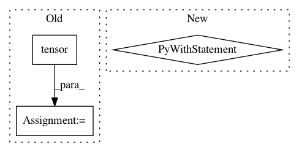

9b8ad4977dd57c82b11145419ad4238cf9f7342e,tensorly/tests/test_backend.py,,test_set_backend,#,15
Before Change
def test_set_backend():
tensor = T.tensor(np.arange(12).reshape((4, 3)))
tensor2 = tl.tensor(np.arange(12).reshape((4, 3)))
assert T.is_tensor(tensor)
assert T.is_tensor(tensor2)
After Change
toplevel_backend = tl.get_backend()
// Set in context manager
with tl.set_backend("numpy"):
assert tl.get_backend() == "numpy"
assert isinstance(tl.tensor([1, 2, 3]), np.ndarray)
assert isinstance(T.tensor([1, 2, 3]), np.ndarray)
assert tl.float32 is T.float32 is np.float32
with tl.set_backend("pytorch"):
assert tl.get_backend() == "pytorch"
assert torch.is_tensor(tl.tensor([1, 2, 3]))
assert torch.is_tensor(T.tensor([1, 2, 3]))
assert tl.float32 is T.float32 is torch.float32
// Sets back to numpy
assert tl.get_backend() == "numpy"
assert isinstance(tl.tensor([1, 2, 3]), np.ndarray)
assert isinstance(T.tensor([1, 2, 3]), np.ndarray)
assert tl.float32 is T.float32 is np.float32
// Reset back to initial backend
assert tl.get_backend() == toplevel_backend
// Set not in context manager
try:
In pattern: SUPERPATTERN
Frequency: 3
Non-data size: 3
Instances
Project Name: tensorly/tensorly
Commit Name: 9b8ad4977dd57c82b11145419ad4238cf9f7342e
Time: 2018-09-28
Author: jiminy.crist@gmail.com
File Name: tensorly/tests/test_backend.py
Class Name:
Method Name: test_set_backend
Project Name: tensorly/tensorly
Commit Name: daa2c7ea2bf2c203ddef038f2eaf9d70bc07c7d4
Time: 2020-01-01
Author: roald.marie@gmail.com
File Name: tensorly/tests/test_parafac2_tensor.py
Class Name:
Method Name: test_validate_parafac2_tensor
Project Name: pytorch/text
Commit Name: aa7176b583f29a61f4fa050d10ba5d57bf908986
Time: 2020-12-22
Author: 855818+mthrok@users.noreply.github.com
File Name: test/experimental/test_vectors.py
Class Name: TestVectors
Method Name: test_vectors_load_and_save